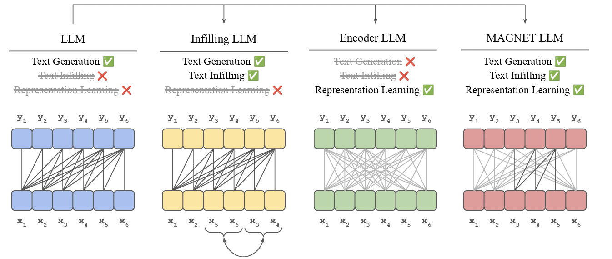
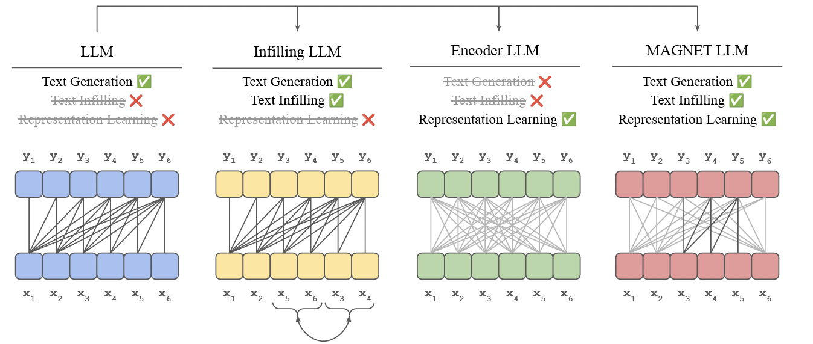
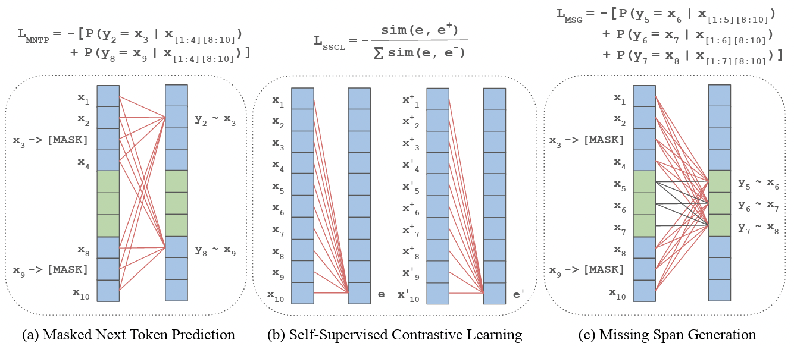
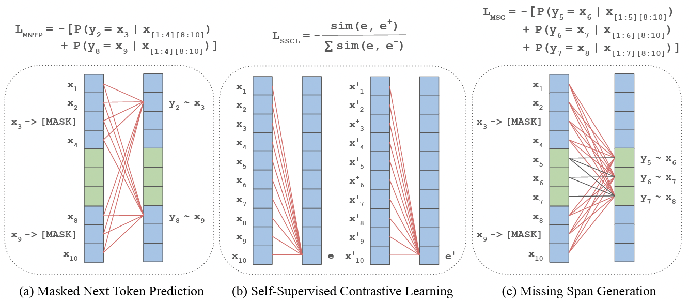
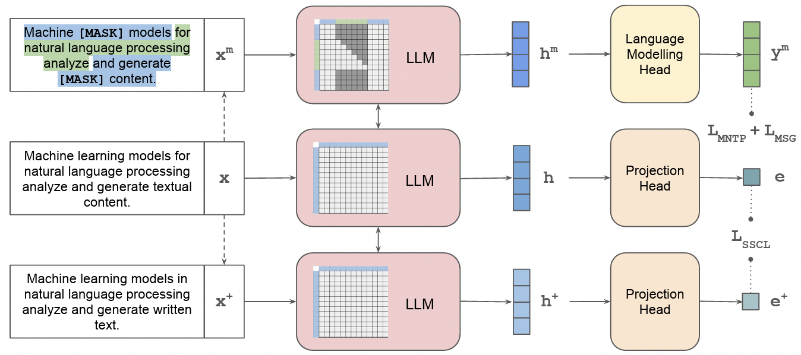
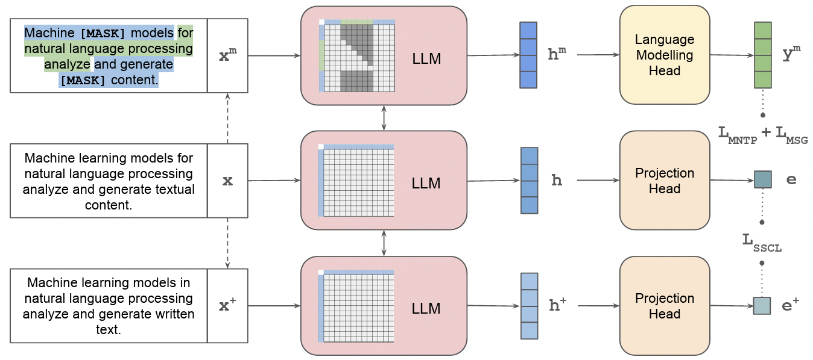
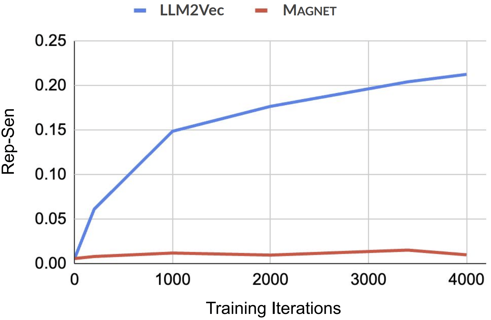
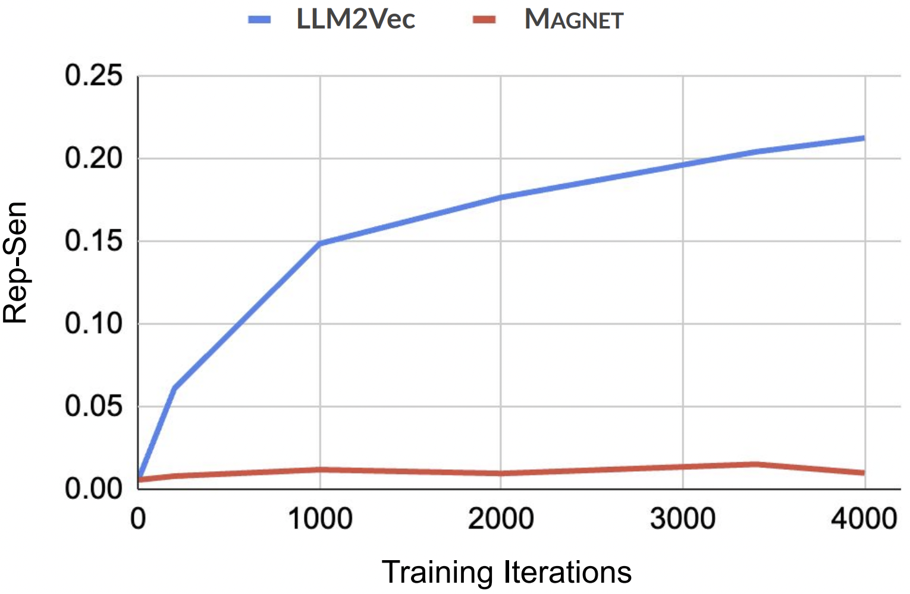
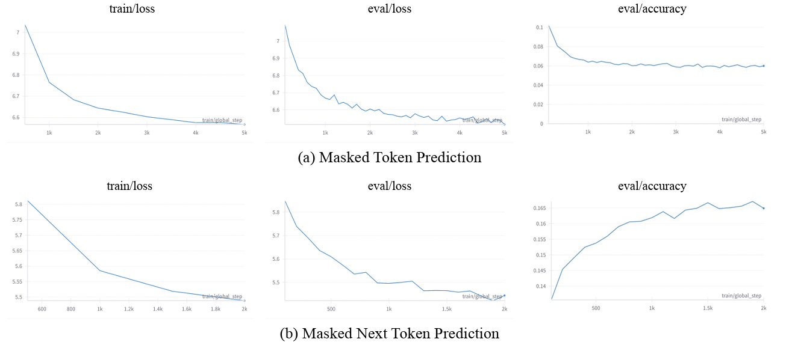
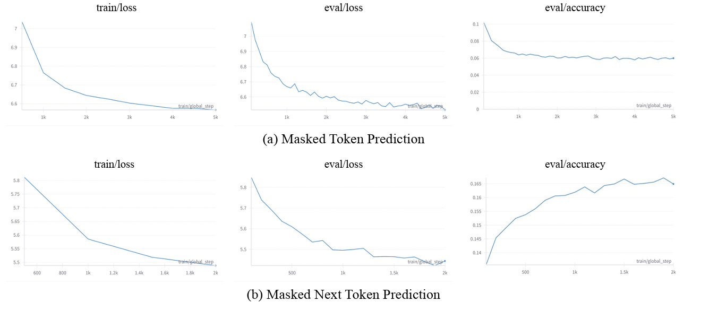

Abstract
While originally designed for unidirectional generative modeling, decoder-only large language models (LLMs) are increasingly being adapted for bidirectional modeling. However, unidirectional and bidirectional models are typically trained separately with distinct objectives (generation and representation learning). This separation overlooks the opportunity for developing a more versatile language model and for these objectives to complement each other. In this work, we propose MAGNET, a method for adapting decoder-only LLMs to generate robust representations and infill missing text spans. MAGNET employs three self-supervised training objectives and introduces an attention mechanism that combines bidirectional and causal attention, enabling unified training across all objectives. Our results demonstrate that LLMs adapted with MAGNET (1) surpass strong text encoders on token-level and sentence-level representation learning tasks, (2) generate contextually appropriate text infills by leveraging past and future contexts, (3) perform open-ended text generation without excessive repetition of words or phrases, and (4) preserve the knowledge and reasoning capability gained by the LLM during pretraining.
Method Overview
Key Components
MAGNET transforms decoder-only LLMs into versatile models capable of both generation and representation learning through:
- Modified Attention Mechanism: Combines bidirectional and causal attention patterns
- Three Training Objectives:
- Masked Next Token Prediction (MNTP)
- Self-Supervised Contrastive Learning (SSCL)
- Missing Span Generation (MSG)
- Unified Training: Simultaneous optimization of all objectives
Key Innovation: Unlike previous methods that either focus on generation or representation learning, MAGNET successfully combines both capabilities in a single model without compromising either.
Figure 1: Traditional LLMs vs MAGNET attention patterns


Training Objectives
Figure 2: MAGNET training objectives illustration


Figure 3: MAGNET approach overview


Key Contributions
MAGNET introduces a decoding-time framework that augments pretrained language models with latent representations and infilling capabilities, without requiring additional training. It addresses a core limitation in standard left-to-right generation by decoupling content planning from realization, enabling coherent and controllable text generation across a range of tasks. Our approach combines masked next token prediction, self-supervised contrastive learning, and missing span generation into a unified representation-learning objective. Through extensive evaluations—including human judgment, perplexity, and repetition analysis—MAGNET consistently improves coherence, factuality, and fluency across narrative, factual, and open-ended infilling benchmarks. These results demonstrate that smarter decoding, not just larger models, can significantly advance the quality of generative language systems.
Results ▼
Word-Level Tasks
Table 1: Results on word-level tasks
| Model | Chunking | NER | POS-Tags |
|---|---|---|---|
| Encoder models | |||
| BERT-Large | 71.77 | 90.09 | 75.12 |
| XLNet-Large | 79.70 | 93.67 | 83.02 |
| DeBERTa-Large | 85.74 | 94.97 | 86.49 |
| StructBERT-Large | 89.99 | 97.31 | 90.86 |
| Llama 2 models | |||
| Llama-2-7B | 88.23 | 96.59 | 91.53 |
| LLM2Vec | 89.66 | 96.05 | 90.53 |
| LLM2Vec[MNTP] | 91.61 | 97.16 | 92.61 |
| MAGNET | 92.64 | 98.31 | 93.34 |
Infilling Tasks
Table 4: Results on infilling tasks (Perplexity)
| Method | ROC Stories | Wikitext-103 |
|---|---|---|
| Llama-2-7B | 13.9347 | 22.0399 |
| MAGNET | 9.5161 | 15.4573 |
Table 5: Human evaluation for infilling (% contextually appropriate)
| Method | Score |
|---|---|
| Unidirectional Llama-2-7B | 53.5 |
| Zero-Shot Setup | 5.5 |
| Five-Shot Setup | 54.5 |
| MAGNET | 62.0 |
Repetition Analysis
Table 6: Repetition problem analysis
| Method | Wikitext-103 | ROC Stories | ||
|---|---|---|---|---|
| Rep-Sen | Rep-4 | Rep-Sen | Rep-4 | |
| Llama-2-7B | 0.0056 | 0.0601 | 0.0381 | 0.0163 |
| LLM2Vec | 0.2044 | 0.4747 | 0.2945 | 0.5243 |
| MAGNET | 0.0151 | 0.2047 | 0.0737 | 0.2573 |
Lower scores indicate less repetition. MAGNET significantly reduces repetition compared to LLM2Vec while maintaining strong performance.
Figure 5: Repetition trends during training


Knowledge Preservation ▼
Table 7: Impact on knowledge and reasoning capabilities
| Model | HellaSwag | BBH | ARC | NQ | MMLU | ||||
|---|---|---|---|---|---|---|---|---|---|
| Easy | Challenge | Humanities | STEM | Social Science | Other | ||||
| Llama-2-7B | 75.51 | 33.57 | 73.95 | 44.28 | 24.02 | 43.27 | 36.09 | 53.04 | 54.84 |
| MAGNET | 75.08 | 32.22 | 74.33 | 44.52 | 24.22 | 42.25 | 36.63 | 52.64 | 52.40 |
MAGNET preserves the original knowledge and reasoning capabilities of Llama-2-7B with minimal impact on performance.
Additional Analysis ▼
Sentence-Level Tasks
Table 2: Results on STS tasks
| Model | STS12 | STS13 | STS14 | STS15 | STS16 | STS-B | SICK-R | Avg |
|---|---|---|---|---|---|---|---|---|
| Encoder models (finetuned using SimCSE) | ||||||||
| BERT-Base | 68.40 | 82.41 | 74.38 | 80.91 | 78.56 | 76.85 | 72.23 | 76.25 |
| RoBERTa-Base | 70.16 | 81.77 | 73.24 | 81.36 | 80.65 | 80.22 | 68.56 | 76.57 |
| RoBERTa-Large | 72.86 | 83.99 | 75.62 | 84.77 | 81.80 | 81.98 | 71.26 | 78.90 |
| Llama 2 models | ||||||||
| Llama-2-7B | 50.98 | 74.02 | 62.86 | 67.09 | 71.03 | 63.56 | 67.22 | 65.25 |
| Echo Embeddings | 52.40 | 72.40 | 61.24 | 72.67 | 73.51 | 65.73 | 64.39 | 66.05 |
| LLM2Vec | 65.39 | 79.26 | 72.98 | 82.72 | 81.02 | 78.32 | 71.77 | 75.92 |
| MAGNET | 67.98 | 84.66 | 77.67 | 84.17 | 79.44 | 82.88 | 78.77 | 79.36 |
Clustering Tasks
Table 3: Results on clustering tasks
| Dataset | BiorxivClustering | TwentyNewsgroups | MedrxivClustering |
|---|---|---|---|
| Echo Embeddings | 25.92 | 23.42 | 24.30 |
| LLM2Vec | 34.69 | 30.76 | 29.49 |
| MAGNET | 35.10 | 53.31 | 30.21 |
Ablation Studies ▼
Table 8: Ablation analysis of training objectives
| Training Objectives | Chunking | NER | POS | STS12 | STS13 | STS14 | STS15 | STS16 |
|---|---|---|---|---|---|---|---|---|
| MNTP | 92.44 | 98.11 | 93.18 | – | – | – | – | – |
| SSCL | – | – | – | 69.06 | 84.53 | 78.07 | 84.09 | 78.52 |
| MNTP + MSG | 92.51 | 98.20 | 93.38 | – | – | – | – | – |
| SSCL + MSG | – | – | – | 68.46 | 84.52 | 77.33 | 84.35 | 79.17 |
| MNTP + SSCL + MSG | 92.64 | 98.31 | 93.34 | 67.98 | 84.66 | 77.67 | 84.17 | 79.44 |
This ablation study demonstrates that combining all three objectives (MNTP + SSCL + MSG) provides the best overall performance across both token-level and sentence-level tasks.
Figure 6: Training curves comparing MTP vs MNTP objectives


@misc{khosla2025magnetaugmentinggenerativedecoders,
title={MAGNET: Augmenting Generative Decoders with Representation Learning and Infilling Capabilities},
author={Savya Khosla and Aditi Tiwari and Kushal Kafle and Simon Jenni and Handong Zhao and John Collomosse and Jing Shi},
year={2025},
eprint={2501.08648},
archivePrefix={arXiv},
primaryClass={cs.CL},
url={https://arxiv.org/abs/2501.08648},
}